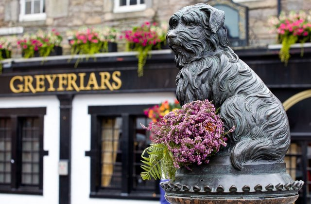

Пам'ятник собаці Грейфраерс Боббі
Шотландський скай-тер'єр Боббі в XIX столітті став однією з найвідоміших собак в світі завдяки своїй відданості господареві. Невисокий, близько 26 сантиметрів у висоту, песик два роки був вірним другом службовця міської поліції Джона Грея, який служив нічним обхідником. Коли поліцейський помер від туберкульозу, Боббі дуже важко переніс розлуку з ним і сидів цілими днями на могилі містера Грея на кладовищі Грейфрайерс біля однойменної церкви. Так він і провів решту 14 років свого життя. Від могили він відходив лише кілька разів на день, щоб збігати в один з найближчих ресторанів, чий власник добровільно взяв на себе обов'язок годувати пса. Вражений вірністю Боббі, глава міста Вільям Чемберс замовив для нього спеціальний нашийник, де вигравірував своє ім'я і написав слово "дозволено".
"Наступна сторінка"